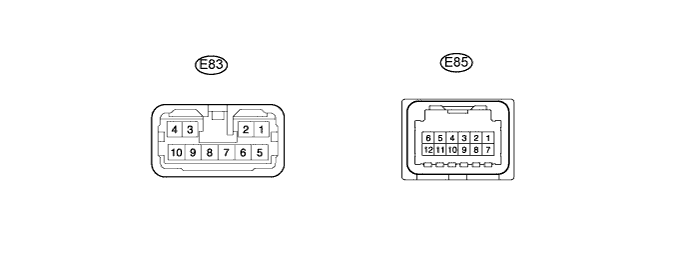
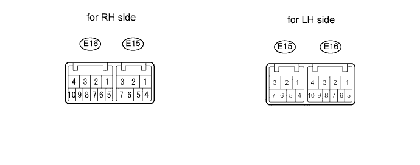
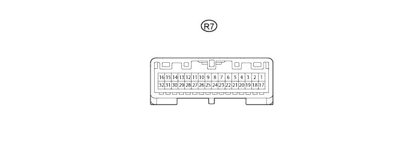

WIPER AND WASHER SYSTEM (w/ Rain Sensor) > TERMINALS OF ECU |
| CHECK WINDSHIELD WIPER ECU |

Disconnect the E83 and E85 ECU connectors.
Measure the voltage and resistance according to the value(s) in the table below.
| Terminal No. (Symbol) | Wiring Color | Terminal Description | Condition | Specified Condition |
| E83-5 (IG1l) - A50-6 (ES) | G - W-B | Power source | Engine switch on (IG) | 11 to 14 V |
| E85-10 (E) - Body ground | W-B - Body ground | Power ground | Always | Below 1 Ω |
Reconnect the E83 and E85 ECU connectors.
Measure the voltage according to the value(s) in the table below.
| Terminal No. (Symbol) | Wiring Color | Terminal Description | Condition | Specified Condition |
| E83-7 (+SM) - Body ground | W - Body ground | Front wiper motor operation signal | Front wiper is operated | 11 to 14 V |
| Front wiper is stopped | Below 1 V | |||
| E83-8 (WIG) - Body ground | B - Body ground | Front wiper motor power source circuit | Engine switch off | Below 1 V |
| Engine switch on (IG) | 11 to 14 V | |||
| E83-10 (1S) - Body ground | G - Body ground | Front wiper motor power supply circuit | Front wiper switch off | Below 1 V |
| Front wiper switch LO | 11 to 14 V | |||
| E83-9 (2S) - Body ground | R - Body ground | Front wiper motor power supply circuit (HI signal) | Front wiper switch off | Below 1 V |
| Front wiper switch HI | 11 to 14 V | |||
| E85-2 (W) - Body ground | L - Body ground | Front washer motor power source circuit | Front washer switch off | Below 1 V |
| Front washer switch on | 11 to 14 V |
| CHECK WINDSHIELD WIPER SWITCH |

Disconnect the E16 switch connector.
Measure the voltage according to the value(s) in the table below.
| Terminal No. (Symbol) | Wiring Color | Terminal Description | Condition | Specified Condition |
| E16-2 (+B) - E16-10 (E)*1 | B - W-B | Power source circuit (from battery) | Engine switch on (IG) | 11 to 14 V |
| E16-3 (+B) - E16-5 (E)*2 | B - W-B | Power source circuit (from battery) | Engine switch on (IG) | 11 to 14 V |
| E16-10 (E) - Body ground*1 | W-B - Body ground | Ground circuit | Always | Below 1 V |
| E16-5 (E) - Body ground*2 | W-B - Body ground | Ground circuit | Always | Below 1 V |
| CHECK MAIN BODY ECU (COWL SIDE JUNCTION BLOCK LH) |

Disconnect the 2A, 2B, E3 and E1 main body ECU connectors.
Measure the voltage according to the value(s) in the table below.
| Terminal No. (Symbol) | Wiring Color | Terminal Description | Condition | Specified Condition |
| E1-6 (AM1) - 2D-62 (GND2) | W - W-B | ECU power supply (from battery) | Always | 11 to 14 V |
| E2-11 (IG2D) - 2D-62 (GND2) | B - W-B | IG signal circuit | Engine switch off | Below 1 V |
| Engine switch on (IG) | 11 to 14 V | |||
| 2B-22 (STP) - 2D-62 (GND2) | R - W-B | Stop light switch circuit | Stop light switch off | Below 1 V |
| Stop light switch on | 11 to 14 V | |||
| 2D-62 (GND2) - Body ground | W-B - Body ground | Ground circuit | Always | Below 1 V |
| CHECK MAP LIGHT |

Disconnect the R7 map light connector.
Measure the voltage according to the value(s) in the table below.
| Terminal No. (Symbol) | Wiring Color | Terminal Description | Condition | Specified Condition |
| R7-15 (+B2) - R7-3 (GND4) | B - W-B | ECU power supply (from battery) | Always | 11 to 14 V |
| R7-14 (IG) - R7-3 (GND4) | L - W-B | IG signal circuit | Engine switch off | Below 1 V |
| Engine switch on (IG) | 11 to 14 V | |||
| R7-3 (GND4) - Body ground | W-B - Body ground | Ground circuit | Always | Below 1 V |
| CHECK RAIN SENSOR |
Disconnect the R11 rain sensor connector.
Measure the voltage according to the value(s) in the table below.
| Terminal No. (Symbol) | Wiring Color | Terminal Description | Condition | Specified Condition |
| R11-4 (SIG) - Body ground | G - Body ground | IG signal circuit (to IG relay) | Engine switch off | Below 1 V |
| Engine switch on (IG) | 11 to 14 V | |||
| R11-1 (ES) - Body ground | W - Body ground | Ground circuit | Always | Below 1 V |
| CHECK HEADLIGHT CLEANER CONTROL RELAY |
Disconnect the relay connector.
Measure the voltage according to the value(s) in the table below.
| Terminal No. (Symbol) | Wiring Color | Terminal Description | Condition | Specified Condition |
| 3 (IG) - 4 (E) | R-B - W-B | IG signal circuit (to IG relay) | Engine switch off | Below 1 V |
| Engine switch on (IG) | 11 to 14 V | |||
| 6 (PB) - 4 (E) | W-G - W-B | Headlight cleaner motor operation signal | Headlight cleaner motor is stopped | Below 1 V |
| Headlight cleaner motor is operating | 11 to 14 V |
Reconnect the relay connector.
Measure the voltage according to the value(s) in the table below.
| Terminal No. (Symbol) | Wiring Color | Terminal Description | Condition | Specified Condition |
| 2 (H) - 4 (E) | LG - W-B | Headlight cleaner switch and headlight switch operation signal | Headlight cleaner switch is off | Below 1 V |
| Headlight switch is off | Below 1 V | |||
| Headlight cleaner switch and headlight switch is on | 11 to 14 V |